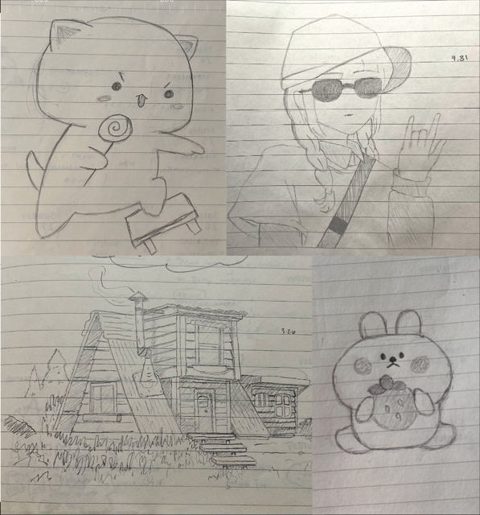
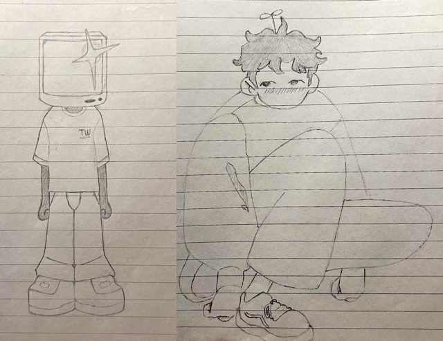
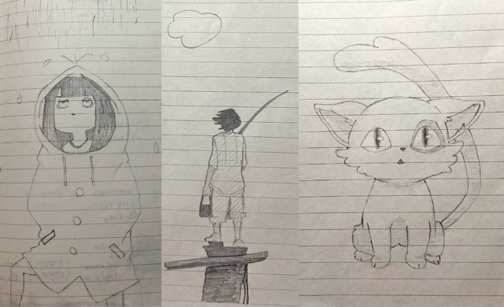

Sketching
Pencil drawings
I’m relatively new to drawing. Aside from some casual doodling in my planner, I hadn’t taken any formal art classes since elementary school until just this past semester.
What started as a simple creative outlet turned into something surprisingly meaningful. I began by setting aside a small space in my weekly planner to sketch—just once a week, no pressure.
My drawings were inspired by references I found on Pinterest. There was something calming and exciting about translating an image into my own style, one line at a time.
Over time, I noticed small improvements in how I understood shapes, shadows, and flow. Drawing became a meditative practice—part observation, part exploration.
This past holiday season, I received a set of drawing pens, which completely changed the game for me. The control and sharpness they offer made me more intentional with each stroke. I’m still learning, still experimenting, but drawing has become a part of my creative identity—a quiet moment of focus in my week where I can see myself grow, one sketch at a time.